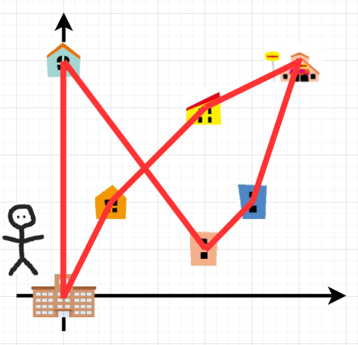
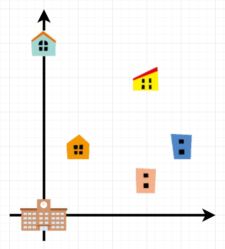
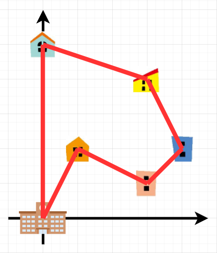

日比谷高校→X会→山合→レストラン→銅青会→瞬台→T進→日比谷高校
この問題では訪れるべき施設(予備校&レストラン)の数は6つでしたが、よび子さんがさらに多くの予備校に通うことになった場合を考えてみましょう。
先ほど、あり得る経路のパターンは順列だと述べました。訪れるべき施設の数をNと置くと、経路は全てで N! 通りです。
ただし、経路を逆からたどってもかかる時間は変わらないので、調べるべきパターンは N!/2 通りです。
階乗というものは恐ろしく、N=10のときでパターン数は1814400通り、N=20では 1.3 * 10^32 通りを超え、爆発的に増えていきます。このくらいのパターン数になってくると、コンピュータを使っても何億、何京年かかります。
Nが大きくなったとき、この問題の厳密な解を求めることは大変難しく、近似解を求める様々なアルゴリズムが研究されています。ぜひ巡回セールスマン問題を検索してみてください。
最後まで読んでいただきありがとうございます。当初は滞在時間や、レストランを訪問する時間の制約は付けず以下のような問題にしていました。
しかし、予備校の数がこれくらいであれば結構直観的に答えが分かってしまいます
そこで、各予備校での滞在時間やレストランを22:00までに訪問しなければいけないという制約を付けてみました。より現実に近い想定にはなりました。 しかし結果的に、作問者の僕が思いつくことが出来、ご紹介できる解法が全列挙しかないという事態になってしまいました。これを紙面上で手計算でやらなければならないというとても酷な問題になってしまってごめんなさい。
この問題を通して、プログラミングで問題を解くということ、そして計算量の概念やアルゴリズムについて興味を持っていただけたら幸いです。 巡回セールスマン問題もぜひ調べてみてください。